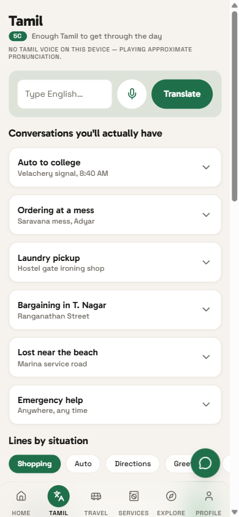
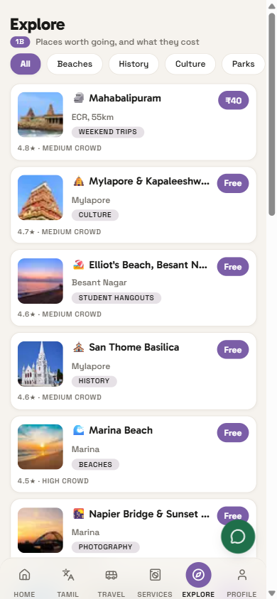

01what it is
Moving to Chennai for college means a language you don't speak, auto fares that change with the driver's mood, and a city you don't know yet. Circle is a mobile web app that gets a new student through those first weeks: enough Tamil for daily life, what each way of getting around actually costs, and places worth going.
02what i built
A mobile-first Next.js app, deployed on Vercel. The Tamil section is organised around situations students actually hit (an auto to college, ordering at a mess, bargaining on Ranganathan Street, an emergency), with every line in Tamil script, a pronunciation guide and audio. Travel compares cycling, the suburban train, MTC buses, the metro and share autos for a given distance and highlights the cheapest. Explore lists places with their cost, category and how crowded they get. Everything works as a guest; an account is optional and only exists so progress survives a reinstall.
03challenges
Audio pronunciation depends on the phone having a Tamil voice installed, and many don't. Rather than failing silently, Circle falls back to an approximate pronunciation and tells the user it's doing so. The other problem was friction: a student who just arrived shouldn't have to sign up before getting help, so guest mode is the default and saving an account is a later, optional step.
04what i learned
Designing for one person in one place beats designing for everyone. Writing phrases for real moments (“Velachery signal, 8:40 AM”) made the content far more useful than a generic phrasebook would have been.
05results
Live at madrasi-pi.vercel.app. [add users, students who tried it, or feedback]